Power steering link Assembly assembly |
| 1. Power steering cylinder tube oil seal installation |
Apply a power steering fluid to the lip of the new cylinder tube oil seal.
| 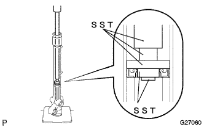 |
Use SST and press to attach a cylinder tube oil seal.
| 2. Power steering rack inspection |
Inspect the wear and damage of the tooth surface.
| 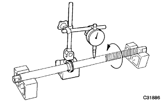 |
Inspect the bend of the steering rack using the V block and dial gauge.
| 3. Lux tairing piston ring installation |
Apply a power steering fluid to the new piston ring and O -ring.
Attach the O -ring to the steering rack.
| 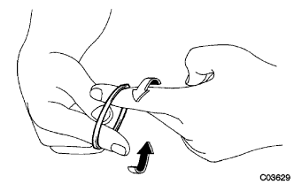 |
Piston ring is clicked with your finger so that it is easy to install.
Attach the piston ring to the steering rack.
| 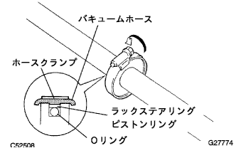 |
Use a hose clamp and a vacuum hose to shrink the extended piston ring.
| 4. Power steering rack installation |
Cut the rack cover tube so that it is about 30mm longer than the tip of the rack while covering the tooth surface and port.
| 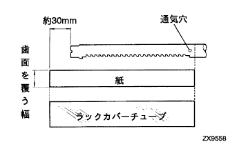 |
Cut the paper with a thickness of a newspaper to the same length as the rack cover tube with a width that covers the tooth surface of the steering rack.
| 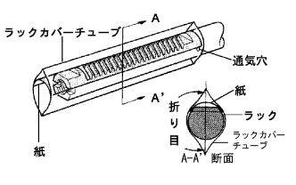 |
Fill the chassis grease special on the valley of the teeth of the steering rack.
Set the paper so that the steering rack is covered.
The rack cover tube is inserted to the position where the port is covered in the folded direction as shown in the figure.
| 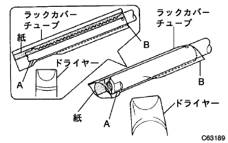 |
Using the back side of the teeth, the steering rack is applied diagonally on the outlet of the dryer as shown in the figure, and the dryer in the rack cover tube is pushed out to the B side, and the dryer is moved to section B.Controls the rack cover tube.
| 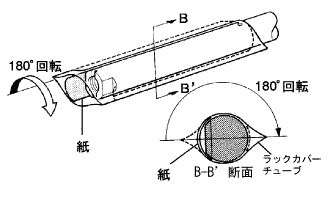 |
Only the rack cover tube rotates 180 °.
Use the back of the teeth to contract the rack cover tube.
Draw the paper.
| 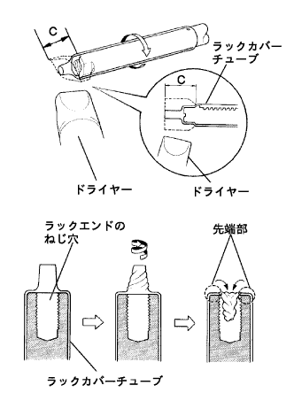 |
While turning the steering rack, only warm the tip C, and quickly twist the rack cover tube into the screw hole of the rack end.
Confirm that there is no protrusion at the tip and there is no edge.
Confirm that there is no scratch on the rack cover tube surface.
Apply power steering fluid to the steering rack rack cover tube and piston ring.
Attach the steering rack to the rack housing and remove the rack cover tube.
| 5. Power steering rackbush installation |
Apply a power steering fluid to the new O -ring and rackbush oil seal.
Attach the O -ring to rackbush.
| 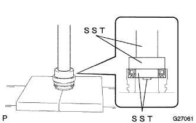 |
Use SST and press to attach a rackbush oil seal.
 |
Wrap protective tape around the LH side of the steering rack and apply power steering fluid.
Attach the rackbush to the LH side of the rack housing.
Remove the protective tape.
| 6. Installation of cylinder end stopper |
| 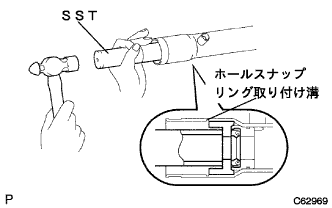 |
Use SST and hammer to insert a cylinder end stopper until the hole napping mounting groove is visible.
| 7. Cylinder end stopper hole napping installation |
Use a needle nose plier to attach a new hole napping ring.
| 8. Power steering rack housing airtight inspection |
| 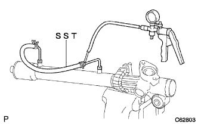 |
Use SST and Mighty bag to apply a negative pressure of 53 kpa {400 mmHg} and confirm that the guideline has not changed when retained for about 30 seconds.
| 9. Power steering control valve bearing mounting |
Apply MP grease No.2 to the lip of the new control valve app oil seal.
| 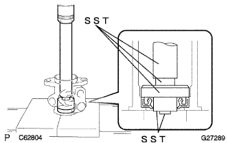 |
Use SST and press to press the control valve app oil seal.
| 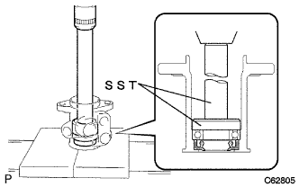 |
Use SST and press to press the control valveopers.
| 10. Power steering control valve ring installation |
Apply a power steering fluid to four new control valve ring.
The control valve ring is extended so that it is easy to attach with your finger.
Attach 4 control valve to the control valve and hold it down by hand.
| 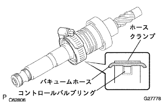 |
Use a hose clamp and a vacuum hose to shrink the extended control valve ring.
| 11. Power steering control valve installation |
Wrap a protective tape around the Selation Department of the control valve.
Apply a power steering fluid to the lip of the control valve app oil seal.
| 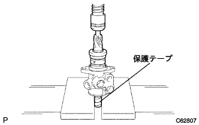 |
Use a press to attach the control valve to the valve housing.
| 12. Power steering control valve ASSY mounting |
| 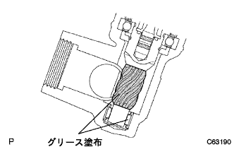 |
Apply a chassis grease special to the valley of pinion teeth and the needle roller bearing part in the rack housing.
Attach a new gasket to the control valve ASSY.
| 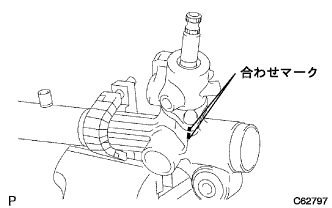 |
Match the matching mark and attach the control valve asser with two bolts.
| 13. Power steering rack guide installation |
| 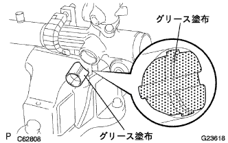 |
Apply a chassis grease special to the surface of the rack guide.
Attach the rack guide to the rack housing.
Clean the spring cap and rack housing screw.
Attach the rack guide spacer and rack guide spring to the rack housing.
Apply Adherive 1344 to the screw of the spring cap and temporarily tighten it.
| 14. Comprehensive plost adjustment |
Tighten the spring cap using a straight hexagon wrench 19.
| 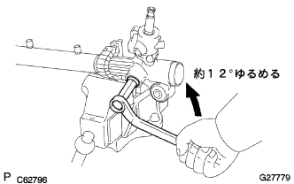 |
Use a straight hexagon wrench 19 to loosen the spring cap about 12 °.
Put the left and right racks to the steering rack.
| 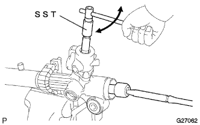 |
Use SST to make the steering rack a full stroke once-2 times and blend in the steering rack.
Use a straight hexagon wrench 19 to loosen the spring cap until the rack guide spring does not work.
| 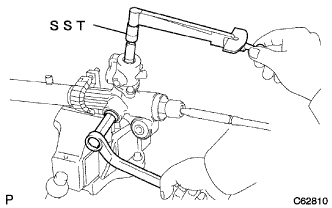 |
When the control valve is rotated using the SST, the spring cap is gradually tightened so that the rotating pre -road becomes a reference value.
| 15. Power steering rack guide cap nut installation |
Clean the screw of the spring cap nut.
Apply Adherive 1344 to the spring cap nut screw and rack housing side end.
| 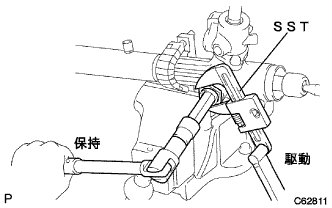 |
Use SST and straight hexagon wrench 19 to attach a spring cap nut.
| 16. Comprehensive pledo inspection |
| 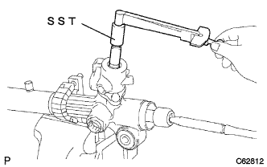 |
Inspect the comprehensive pre -road using SST.
| 17. Steering rack end SUB-ASSY installation |
Fill the MP grease No.2 on the left and right rack end ball joints.
| 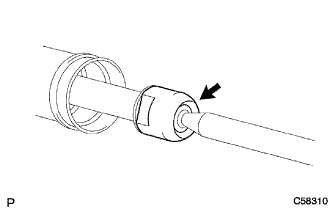 |
Remove the rack end on one side from the steering rack.
| 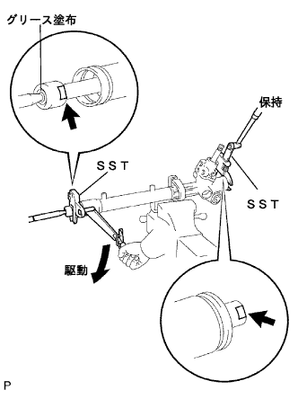 |
Use SST to fix the steering rack and attach the rack end.
| 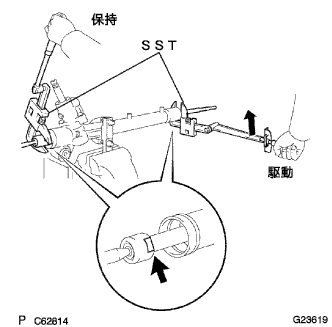 |
Use the SST to fix the tightened rack end and attach the rack end on the other side.
| 18. Steering rack end Ventilation hole inspection |
| 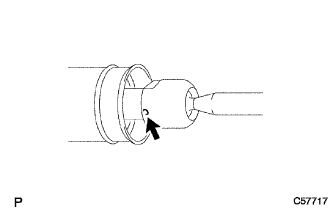 |
The wire is inserted about 30mm in the vent of the rack end to check that it is not clogged.
| 19. Steering rack housing bracket No.2 Installation |
Attach Gromet No.2 to the No.2 bracket.
| 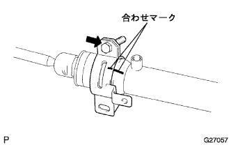 |
Align the matching mark and attach the bolt No.2 with bolt.
| 20. Steering rack boots No.2 installation |
Apply rubber grease to the inside of the small diameter of the rack boots No.2.
| 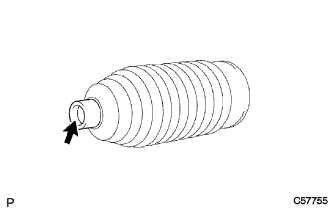 |
Attach the rack boots No.2 into the rack housing groove.
| 21. Steering rack boots No.1 installation |
| 22. Steering rack boots clamp No.2 installation |
Attach the new boot clamp No.2 to the rack boots No.2 groove.
| 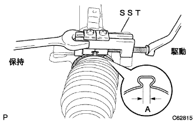 |
Use SST to make boot clamp No.2.
| 23. Steering rack boots Clamp No.1 installation |
| 24. Steering rack boots clip installation |
Use the pliers to attach the clip of the clip toward the rear of the vehicle.
| 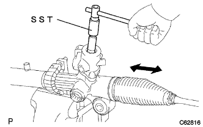 |
When the control valve is rotated using SST, confirm that the rack boots extend and contract.
| 25. Tie rod end SUB-ASSY LH inspection |
Put the ball joint of the tie rod end LH lightly on the vise via an aluminum plate.
Temporarily attach the castle nut.
Five round trips of the ball joint.
| 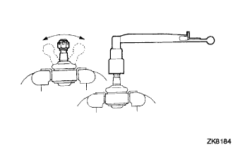 |
Set the torque wrench into the nut, rotate the ball joint continuously at a speed of 3-5 seconds, and check the fifth rotation torque.
| 26. Tie rod end SUB-ASSY RH inspection |
| 27. Tie rod end sub-assy LH installation |
 |
The lock nut and the tie rod end LH are combined to screw to the mark and temporarily tighten the rock nut.
| 28. Tie rod end sub-assy RH installation |
| 29. Steering light turn pressure tube installation |
Apply power steering fluid to two new O -rings and attach them to the light turn pressure tube.
| 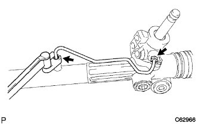 |
Use a union nut wrench 12 to attach a light turn pressure tube.
| 30. Steering left turning pressure tube installation |
| 31. Pressive tube Assisted |
Put the pressure feed tube assigned to the steering link asser.
With two bolts, attach the pressure feed tube ASSY clamp to the steering link asser.
| 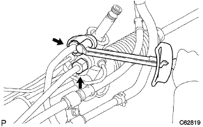 |
Use Union Nut Wrenten 19 to tighten the pressure feed tube ASSY.
| 32. Power Steering Rack Housing Heat Insurator Mounting |
With two bolts, attach the heat insulator to the steering link asser.
| 33. Steering column hole cover SUB-ASSY No.1 Installation |
Attach the No. 1 steering column hole cover.